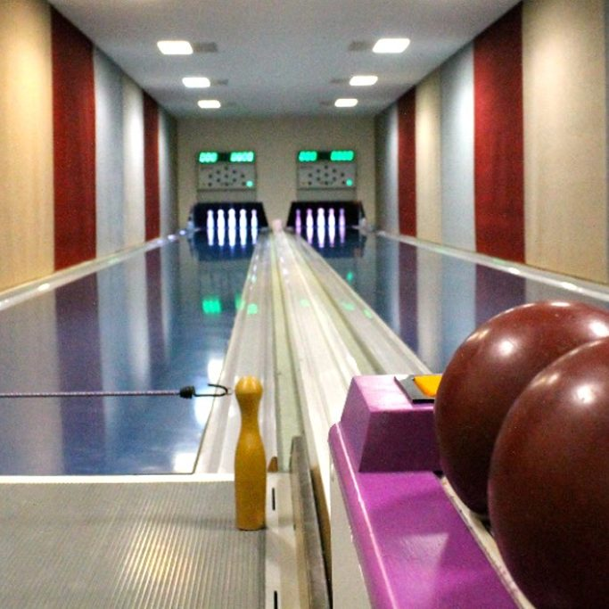
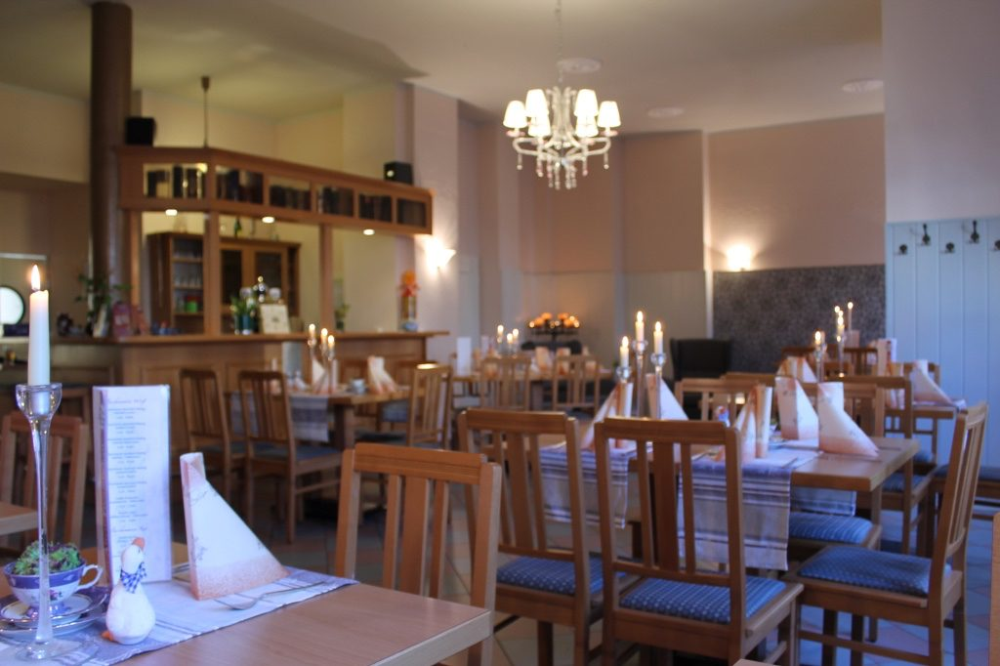

Ankommen
Bahn beziehen, Getränke bestellen und kurz warmwerfen. Für Gruppen ist eine Reservierung sinnvoll.
kegeln im haus
Zwei Classic-Bahnen für gesellige Runden mit Freunden, Familie oder Verein. Auf Wunsch verbinden wir den Kegelabend gern mit Essen und Getränken aus dem Restaurant.
warum kegeln?
Kegeln ist nahbarer als Turnier, lebendiger als ein reiner Restaurantbesuch und ideal für Freundeskreise, Familien, Vereine oder Kollegen. Gespielt wird mit neun Kegeln; bei Classic-Bahnen ist die Bahnform gerade und auf Präzision ausgelegt.
der abend
Bahn beziehen, Getränke bestellen und kurz warmwerfen. Für Gruppen ist eine Reservierung sinnvoll.
Ob lockere Runde oder kleine Challenge: Zwei Bahnen lassen genug Platz für Teams, Pausen und Jubel.
Nach der letzten Kugel geht es direkt ins Restaurant. Speisen und Getränke können gleich mitgeplant werden.


kombinieren
Die Bahn bleibt der aktive Teil des Abends. Danach wartet der Gastraum mit warmem Licht, Essen aus der Küche und Platz für die Runde danach.
Beim Kegeln wird auf neun Kegel gespielt. Die Kugel ist kleiner und traditionell ohne Fingerlöcher, der Wurf lebt mehr von Ruhe, Linie und Gefühl.
Für gemischte Gruppen sehr gut: Man kann sportlich spielen, aber auch entspannt zuschauen, reden und zwischendurch etwas trinken.
Die Kegelbahn kostet 15 Euro pro Stunde. Für Tisch, Feier oder Catering nutzt du am besten direkt das Reservierungsformular.
termin sichern
Datum, Uhrzeit, Personenzahl und besondere Wünsche reichen für den ersten Schritt. Wir melden uns zur Abstimmung zurück.
Tisch, Kegelbahn, Catering oder Feier können gemeinsam angefragt werden.
Zum Formular